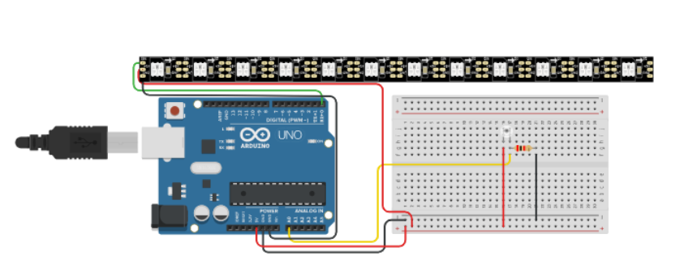

#include <Adafruit_NeoPixel.h>
int photott = A0;
uint32_t color;
uint32_t colorWhite;
#define PIN 0
#define NUMPIXELS 12
Adafruit_NeoPixel pixels = Adafruit_NeoPixel(NUMPIXELS, PIN, NEO_GRB + NEO_KHZ800);
void setup()
{
pixels.begin();
}
void loop() {
int val = analogRead(photott);
val = map(val, 0, 1023, 12, 0);
for (int i = 11; i >= 0; i--) {
if (i >= val) {
pixels.setPixelColor(i, pixels.Color(0,0,0));
} else {
pixels.setPixelColor(i, pixels.Color(255,0,0));
}
pixels.show();
}
delay(200);
}
Результат: Чем больше света принимает датчик, тем меньше светодиодов на NeoPixel горит. Ссылка на проект
 Обратно